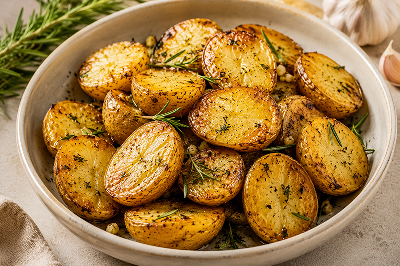
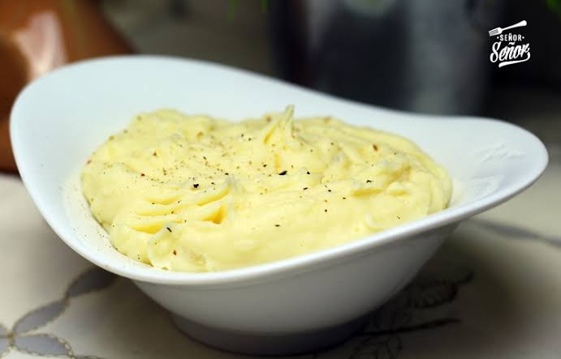
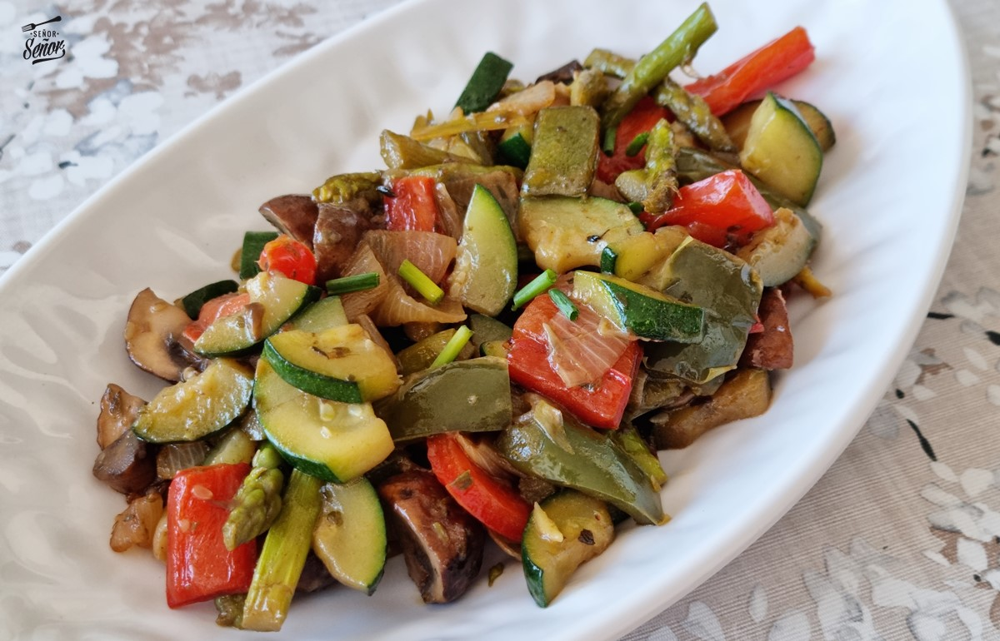
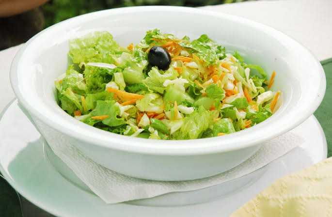
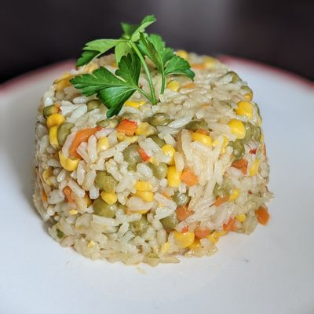
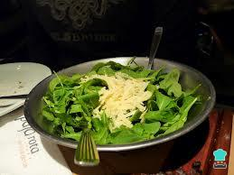

Guarniciones
-
Papas rústicas
Papas doradas al horno con hierbas aromáticas.

-
Puré de papas
Puré casero cremoso preparado con papas seleccionadas.

-
Verduras grilladas
Selección de vegetales de temporada cocinados a la parrilla.

-
Batatas al horno
Batatas horneadas con hierbas y un toque de aceite de oliva.
-
Ensalada de la huerta
Vegetales frescos de estación con vinagreta de la casa.

-
Choclo grillado
Choclo cocinado a la parrilla con hierbas y especias.
-
Arroz con vegetales
Arroz acompañado con vegetales salteados y hierbas frescas.

-
Rúcula y parmesano
Rúcula fresca, queso parmesano y un aderezo suave de limón.
